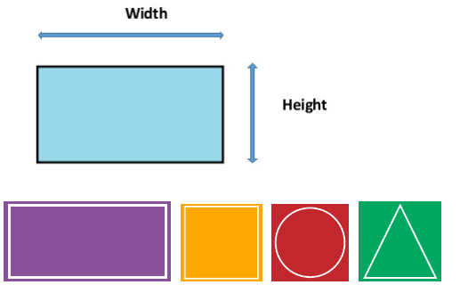
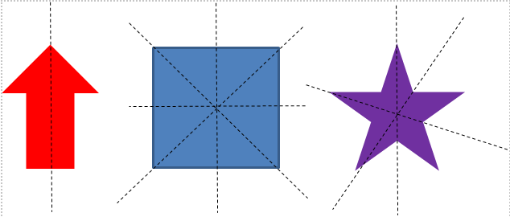

What You Should Know - Geometric Shapes: Symmetry in Our World
 Important Vocabulary
Important Vocabulary
- 2D Shape – a shape with two dimensions: length and width
- Line Symmetry – a figure has line symmetry you can draw a line that divides the object into identical halves
- Symmetrical Figures – symmetrical figures have at least one line of symmetry
- Asymmetrical Figures – do not have one or more lines of symmetry
2D Shapes
A shape that is 2D has two dimensions: length and width.
Any shape that can be laid flat on a piece of paper is a 2D, or two-dimensional, shape.
Examples of 2D shapes include rectangles, squares, circles, and triangles.

Symmetrical and Asymmetrical Figures
Symmetrical figures can be divided into two equal parts by a line. Asymmetrical figures are irregular and do not have lines of symmetry. Lines of symmetry may be vertical, horizontal, or even diagonal. Some figures have just one line of symmetry, while others may have zero, two, or even more!
Symmetrical Figures with Line(s) of Symmetry:

Asymmetrical Figures:

Line Symmetry
A figure or shape has line symmetry you can draw a line that divides the object into identical halves. These two halves look like mirror reflections of each other.
Career Connection and Real-World Application
Architect
Architects use symmetry in the design process. Not only does symmetry allow for buildings to stand, but it also makes it look appealing to the eye. Architects have used symmetry in buildings for thousands of years. Examples include The Eiffel Tower and The Taj Mahal.
Artists
Artists often use symmetrical balance in art. This means that the work of art is the same on one side as the other. Symmetrical balance can be found in tiles, wallpaper, and other original artwork. Symmetrical balance is both pleasing to the eye and holds your interest as you look at it.